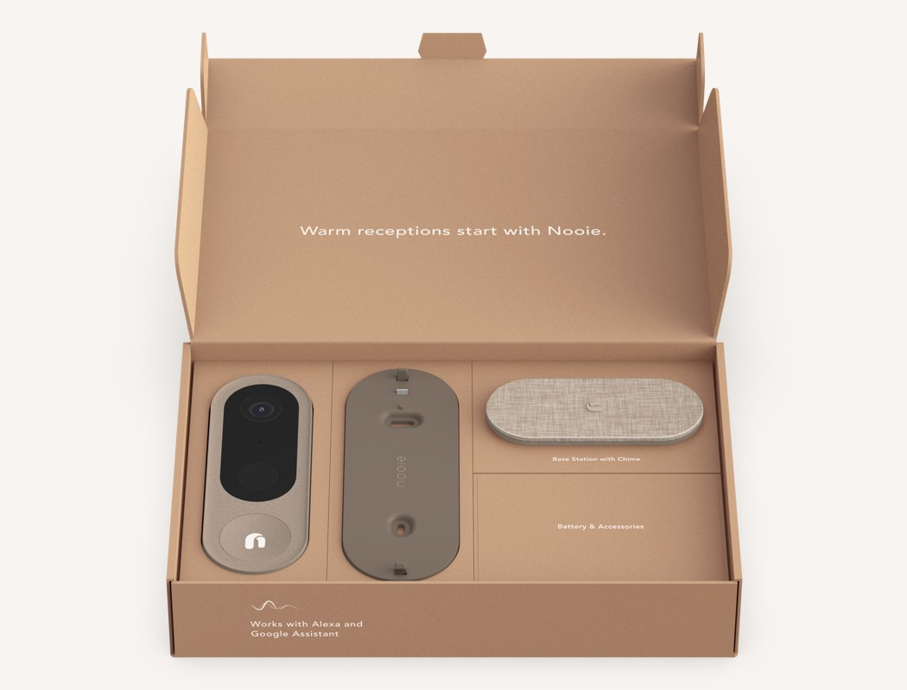
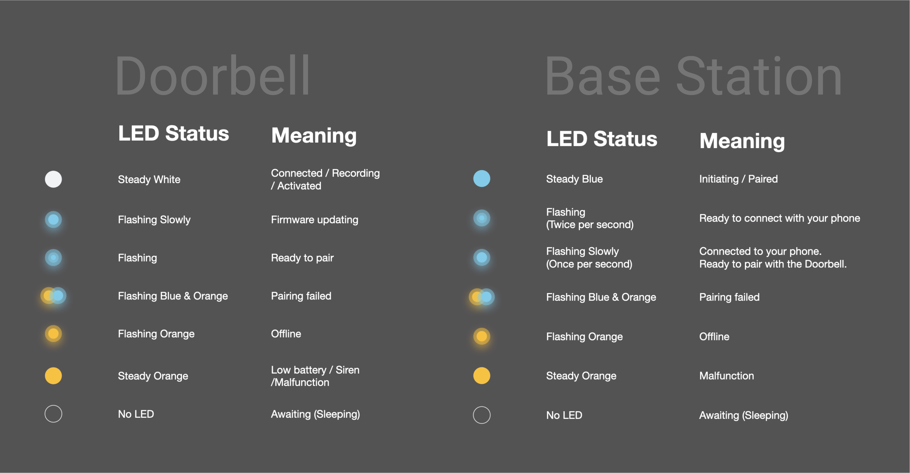
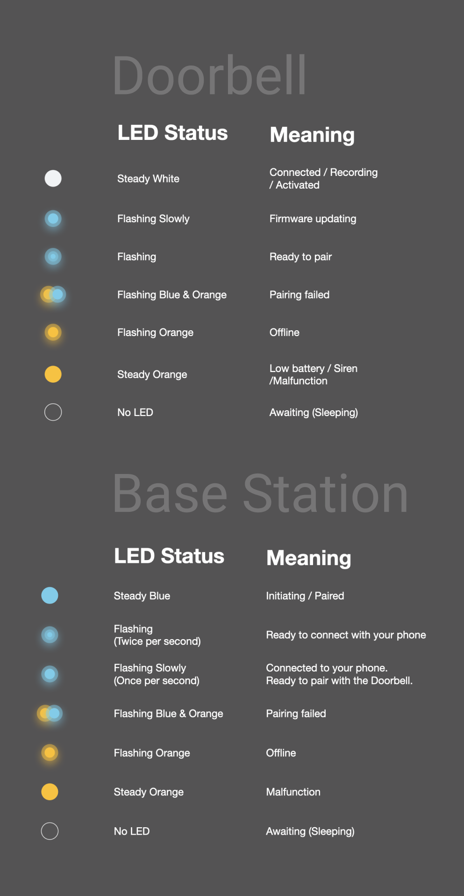

UX Design, App Design
Nooie Doorbell
Nooie is a smart home star-up that focus on home security and automation. By the time I joined Nooie as a full time employee, they already finished up the development and production process of the new product—Nooie Cam Doorbell & Base Station.
However, the Nooie Doorbell had more than 30% return rate in Feb 2021, and I was assigned to understand why customers return the product and to provide a solution.
During the two weeks time period, I participated in and designed the doorbell’s new user flows and app screens to help solving the problem. Six months after my design was implemented, the return rate dropped 19% in July 2021 compared to Feb 2021.
TIMELINE:
Feb 2021 --July 2021
SOFTWARE:
Figma, TestFlight
MY ROLE:
Interviewing
Ideation
Design Thinking
Systems Thinking
Technology Research
Wire-framing
Prototyping
Alpha Tester
Beta Tester
01
OVerview
Problem
In Feb 2021, 37% of Nooie Doorbell & Base station units was returned (higher than standard electronic product return rate ~11-20%) because:
1. Nearly 33% of the user return the Doorbell & Base Station because they can't connect the Doorbell with the Base Station and get very frustrated.
2. Almost 25% of the user returned the Doorbell because the battery drains too fast.
3. Many customers also complain that the CS team is unresponsive/ taking too long to reply, causing a decrease in brand loyalty.
Challenge
1. Time constraint.
2. Cannot make changes on physical product.
Since the products had shipped to the warehouse and Nooie sold around 200 pre-ordered units, I had to give a solution that doesn't require any physical change on the product within a very tight timeframe .
Intent
1. Understand why the users can't connect the Doorbell to the Base station and provide a solution.
2. Provide a better Customer Advocate system that provides an actionable solution to help user solving their problems.
02
Process
Testing the products to understand the problem
Based on the report, I knew I should focus on the connection failure issue first because it is the main reason that caused the customers to return the product.
In order to understand why customers aren't able to connect to the internet, I required three sample products from the company for a product testing.
Product Testing
I didn't have any prior knowledge of Nooie Doorbell, so I was testing it from a new user's perspective.
I tried to read through every text and follow all the instructions but failed to connect for several times. That was the moment I realized how frustrated the customers were when they returned the products.
Overall, these were the few issues that occurred during the pairing process.
1. I followed each step shown on the app, but I ended up getting connection failure each time without knowing where it went wrong.
2. The Indicator lights' meaning are unclear thus causes difficulties for me to self-debug.
3. When the error message pop up in the app, there is no clear message tells me what to do to solve this error.
I couldn't figure out how to connect these two products, so I sought help from my colleagues across different teams.
Finding the problem through conversation with PD and F/W Engineer.
Our Product Designer told me the key to connect the Base Station is to understand the product status by looking at the LED indicator.
Unfortunately, even if I know what each light means, I still failed to reconnect my Base Station and the Doorbell. The product design team defined the LED lights, but they didn't know the mechanism behind the firmware thus didn't know what to do when the product perform unexpectedly.
I mapped out the User Flow base on our app. In this ideological process, the user only has a few actions, but with the help of a firmware engineer, I realized the actual process is way more complicated than it showed.
The Problem
Each product has its operation timing, and it turned out this is the leading cause of the connection failure in our product.
The Doorbell will actively search for a pair-able product after being booted, and if it doesn't find any, it will automatically go to sleeping mode after 30s.
However, the Base Station has to connect to the Wi-Fi first before it becomes a pair-able device, and usually, this process takes around 30s to 50s. So after the Base Station is connected to Wi-Fi, the Doorbell is already in "Sleeping Mode" and can't be found by Base Station anymore. (See diagram below)
The Solution
After I understand how the product firmware works, the solution naturally flowed into my mind: only power the Doorbell after the Base Station is connected to Wi-Fi to ensure their "Searching Time" has overlapping time.
I did 20 testings using this proposed method, and the pairing success rate reached 95% under a stable Wi-Fi connection.
Provide a better Customer Advocate system to reduce confusion and complaints.
The Problem
Customers face a lot of potential failures during each step (See image below). Therefore, the best way to reduce the negative impact on user experience is to provide an actionable solution right away.
Fortunately, we found the key for the pairing to succeed is to make sure the Base Station blinks once per second, indicating it's ready to search for a pair-able product. (see the area highlighted in red)
As long as we can ensure the customers can get guidance to connect the Base Station, we can ensure the rest of the pairing process will succeed. So I decided to embed a self-help system to provide the proper guidance when users need it.
The Solution
Based on the logic flow, I added a few screens that show the solution for the specific issue that the user is experiencing during the pairing process.
03
Final Deliverable
Deliverable
1. Designed screens and created clickable prototype. (Solo Work)
2. Videos (Team Work)
-Doorbell installing tutorial
-Doorbell Troubleshooting Videos: Video 1, Video 2, Video3, Video4
3. Created Nooie Help Center for online self-help system. (Solo Work)

04
Impact
Impact
After implemented my design and all the deliverables, Nooie's return rate reduce from 37% to 18% in May 2021, in which the connection issue complaint reduced from 33% to 10%.
Unfortunately, we didn't implement the User Behavior Tracking in our app, so no data shows if our in-app Customer Advocate system reduces the return rate or not.

After we launched our app with newly design UX flow, I built a Help Center on Nooie Website (from Jun to July) to better advocate customers. By the end of August 2021, Nooie Help Center has reached 7k views since we launch it on July 21. On average, Nooie Help Center has served more than 230 people per day.